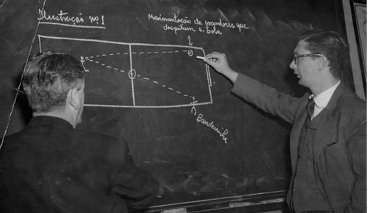
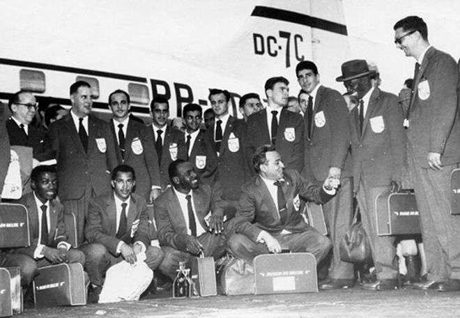
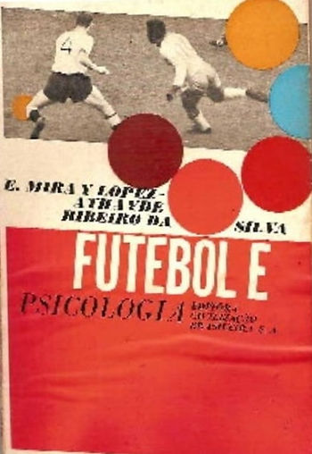
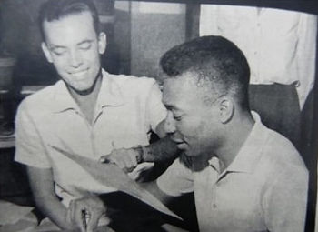
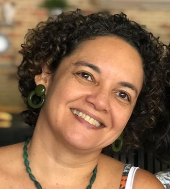

Escrito por Profa. Dra. Cristianne Almeida Carvalho
Universidade Federal do Maranhão (UFMA)
CRP-MA 22/0166
Copa do mundo chegando ao final e mais uma vez não teremos o Brasil entre os finalistas, para nossa decepção. Muitos fatores podem explicar mais uma saída antecipada de nossa seleção do mundial: preparação física e tática deficientes, ausência de uma preparação psicológica…
Não cabe aqui dar essas respostas, mas vou me deter na ausência de preparação psicológica por motivos óbvios. Embora tenha se tornado mais frequente na mídia a exigência de um profissional de psicologia na seleção brasileira para compor a comissão técnica e auxiliar na preparação psicológica dos atletas, não vemos isso acontecer, se vemos é sempre de forma não planejada e obviamente não se pode esperar resultados efetivos.
Pois bem, poucos sabem, mas a presença de psicólogos(as) nas seleções brasileiras não é um fato recente, já ocorreu nos mundiais de 1958, 1962 e 1966. João Carvalhaes na primeira e Athaide Ribeiro nas duas seguintes. Sim, tivemos psicólogos participando oficialmente das comissões técnicas nesse anos. Curiosamente, em 1958, o Brasil se sagrou campeão pela primeira vez com um time de craques como Pelé, Garrincha e companhia. Então, antes mesmo da Psicologia ser uma profissão no Brasil já haviam profissionais atuando no âmbito do esporte. Para entender isso cabe uma breve retrospectiva.

A Psicologia como profissão começa seu percurso no Brasil nas primeiras décadas do século XX. Nos anos 50 surgem os primeiros cursos e, em 1962, se torna legalmente uma profissão. No âmbito do esporte a psicologia se aproxima desse universo a partir das escolas de Educação Física, as quais ofertavam disciplinas de “psicologia aplicada ao desporto” em seus primeiros cursos nos anos 1930. A psicologia do esporte começava ali e a aplicação prática dos conhecimentos psicológicos em modalidades esportivas como o futebol seguiu-se nas décadas seguintes e nos anos 1950 e 1960. Como vimos, com a participação de profissionais na seleção. Claro que a Psicologia do esporte e do exercício na atualidade se difere dessa prática pioneira em termos de profundidade e consistência teórica e metodológica, além de se inserir em outros campos de atuação. Mas é fato que a seleção brasileira já contou com profissionais de psicologia e, mais recentemente, em 2002 e 2014 também temos notícia da participação da psicóloga Regina Brandão nas seleções comandadas pelo Luis Felipe Escolari. Tais participações, diferentemente das anteriores já citadas, não inseriram a psicóloga na comissão técnica, foi uma presença pontual, quase informal, pois não participou do ciclo de preparação da equipe. Que implicações isso pode ter?

Vamos lá, a psicologia do esporte já esteve em 5 edições de Copa do Mundo: nas seleções de 1958, 1962, 1966, 2002 e 2014. Em três delas o Brasil foi campeão, 1958, 1962 e 2002. O que esses números e dados significam? Historicamente muita coisa, uma vez o saber psicológico já se fazia reconhecido décadas antes da profissão se legitimar no Brasil, pois já era notória sua relevância como ciência no mundo. No entanto, é errôneo pensar em tais dados isoladamente e acreditar que se tivermos o profissional de psicologia nas seleções as chances de ganhar as copas aumenta. O esporte como fenômeno social e mercadológico se constitui de muitos fatores, além disso as competições também agregam elementos muitas vezes inusitados. A preparação de uma equipe de alta performance não ocorre de forma instantânea e requer profissionais de diversas áreas para uma preparação integral em seus aspectos físico, tático, técnico e psicológico. Infelizmente, este último quesito ainda não é reconhecido como relevante por muitos dirigentes, técnicos e até atletas. Ainda vivemos tempos de negação da necessidade de uma preparação psicológica e os riscos e prejuízos comparecem nos resultados sim, mas não de forma isolada. Uma equipe que possui uma preparação psicológica está mais apta a lidar com as demandas e exigências emocionais e psicológicas crescentes oriundas dos treinamentos físicos e táticos por exemplo e pode ter um diferencial diante das adversidades do esporte. Em uma competição de curto prazo como a Copa do Mundo, por exemplo, há pouco tempo para construir estratégias de enfrentamento ou controle emocional, por isso a preparação psicológica precisa acompanhar o processo de preparação desde o início. Da mesma forma que o técnico precisa conhecer seus jogadores para saber como escolher um ou outro em cada posição , o psicólogo também precisa conhecer cada um da equipe em suas diferenças pessoais. Ter uma preparação psicológica por profissionais de psicologia qualificados certamente vai agregar e favorecer melhores resultados à equipe, mas jamais será responsável sozinha pelas vitórias ou derrotas. O trabalho da Psicologia do esporte e do exercício, independente da modalidade é multidisciplinar e atuará sempre em conjunto com as demais ciências do esporte e com as condições que a equipe e o ambiente oferecem.

Vale lembrar, que nossas seleções de futebol femininas de base e profissional contam, cada uma, com psicólogas ao longo de suas preparações e competições. Mas se isso é possível no futebol feminino porque não temos no masculino? Essa pergunta vale uma outra discussão.
Que possamos em breve ver nossa seleção masculina bem acolhida em seus aspectos psicológicos também. Não é uma questão de gênero ou sexo a necessidade de cuidar de suas dificuldades e conflitos emocionais, é uma questão de saúde integral para todos. O bem estar físico e psicológico só acrescentam ao desempenho dos atletas e dos demais envolvidos no esporte, seja numa iniciação esportiva ou no alto rendimento.

Profa. Dra. Cristianne A. Carvalho (UFMA)
Psicóloga clínica e do esporte
(CRPMA 22/0166)
Profa. Dra. do Curso de Psicologia e Pós Graduação da Universidade Federal do Maranhão(UFMA); especialista em Fisiologia do exercício; coordenadora da comissão de psicologia do esporte do Conselho Regional de Psicologia do Maranhão (CRPMA ).
Experiência profissional: pesquisadora de historia da psicologia e psicologia do esporte; atua como psicóloga do esporte desde 2000 com esporte profissional e projetos sociais nas modalidades Beach Soccer, futebol de campo, natação, arbitragem entre outros.